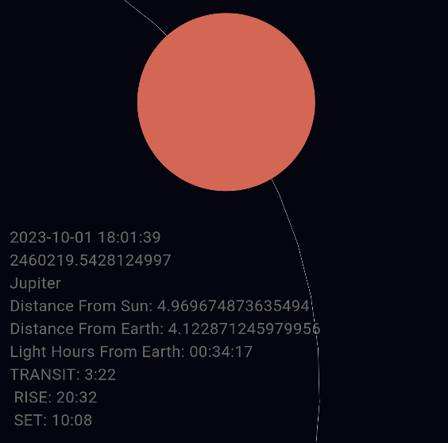

This project was the culmination of about three weeks of work and 80 hours of development. It started out as a simple project to make a functioning model of the solar system, this included using the eccentricity of the orbits, the distances, and via both of those the speed at a given point in an orbit. By the end of the project, I turned it into a full fledged app! I'm still working on getting it app store ready though. The app currently tracks the time accurate positions of the 8 planets in our solar system and gives you information like when they rise or set, or even where they are exactly in the sky!
Initially, I started by using basic equations to calculate the speeds and distances of all the planets, with no respect to time.
I got the distances from almanacs and used a combination of cosine and sine to transpose the distance into 2-dimensional coordinates. The result was something like this:
Then came the issues, I wanted to sync up the planets positions in this simulation with their positions at any given time. I started by calculating the anomalies of the planets at the J2000 Epoch, with that base I firstly tried using the mean velocities of the planets to estimate where they would be after a given time. This unfortunately did not scale well at all, and logically it wouldn't even work on short scale projects. My next thought was iteration to get more specific velocities, this unfortunately did not work either and took exponentially longer to calculate. I tried many, many methods. All to varying levels of success. I decided to take a step back and I read Astronomical Algorithms by Jean Meeus, it was an excellent text and gave me many more ideas, I continued studying on orbital simulation and decided my method for calculating the positions of the planets at a given time would be the JSOP87 model.
I had recently gone camping at this time and while peering into the night sky I wondered which 'stars' I saw in the sky corresponded with which planets. For this reason I wanted my next attempt to be made for mobile devices, the goal, was making a functioning and up to date model of the solar system that would allow me to select a planet and get information about where it is in the sky, when it would rise, when it would set, or any combination of data of this manner.
I don't make mobile apps often but decided to use Flutter and Dart to host my solar system. I started with calculating the current Julian Date and getting to work on displaying the solar system.
With the julian date I calculated the heliocentric cartesian coordinates of all the planets, I then put them on a plane and displayed them, I also added zooming and panning to make it easier to select and choose planets down the line.
I then converted the heliocentric coordinates to geocentric coordinates so I could calculate the right ascension and declination of each planet.
where,
Awesome! Now with the Latitude and Longitude of a user I can calculate when when a planet will rise or fall, but what I found most important was calculating the azimuth and altitude, I'll show the equations for those too,
where,
If you don't know azimuth is where a celestial object is in the sky relative to north of an observer, and altitude is the height of the celestial object in the sky.
I added a layer of text a tthe bottom of my simulation that would be used for information about the selected planet as shown below,
All the pieces are in place! I added a compass and a sensor to the app that will allow me to check what direction my phone is pointing in horizontally and vertically. Then I added a guide mode to the app that would work kind of like a compass, guiding you to your selected planet.
The arrow will always point in the direction of the planet and the bar on the right will shrink depending on how close you are to pointing in the correct vertical direction.
The next night I went out to test if: 1) my app worked 2) I was correct about which planet I was seeing at night. Sure enough, both conditions one and two were satisfied! I now hold the ability to select any planet or the sun and see where it is in the sky and other cool facts that go with it!
The project isn't finished, for instance, I would like to add the moon to my model, but overall it works amazingly well and I learned a lot while making it!
Thanks for reading. :)